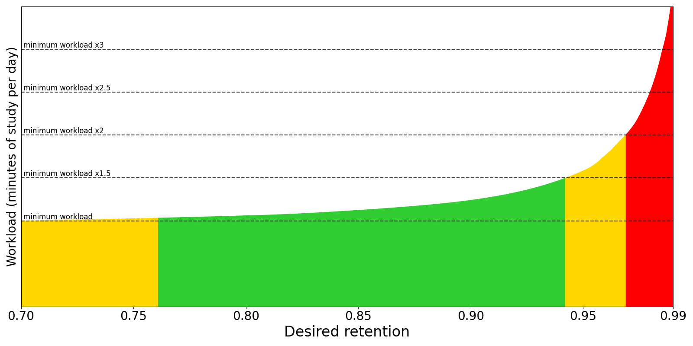

デッキオプション
デッキオプションは主にAnkiがカードをスケジュールする方法を制御します。Ankiの動作を理解するために、オプションを調整し始める前に、デフォルト設定で数週間過ごすことをお勧めします。オプションを変更する前に必ず理解してください。間違いはAnkiの効果を低下させる可能性があります。
コンピューターで、以下のいずれかの方法でデッキオプションを開きます：
- デッキ画面で歯車アイコンをクリックします。
- デッキ画面でデッキを選択し、画面下部のオプションをクリックします。
- 復習モード中にその他 > オプションをクリックします。
- 復習モード中にOを押します。
過去に寄稿されたデッキオプションに関するコミュニティ投稿をいくつか紹介します：
プリセット
Ankiでは、多くのデッキのオプションを一度に更新しやすくするために、異なるデッキ間でオプションを共有できます。これを行うために、オプションは_プリセット_にグループ化されています。プリセット内のオプションを変更すると、同じプリセットを使用するすべてのデッキに変更が適用されます。新しく作成されたすべてのデッキは「デフォルト」プリセットを使用します。
1つのデッキのオプションを変更し、他のデッキは変更しない場合は、デッキオプションウィンドウの右上にある矢印アイコンをクリックします。以下のことができます：
- 保存: デッキオプションで行ったすべての変更を保存します。
- プリセットを追加: このデッキ用に、デフォルトオプションで新しいプリセットを追加します。
- 複製: 現在のプリセットを複製します。一部のオプションを変更したいが、残りはそのままにしたい場合に便利です。
- 名前を変更: 現在のプリセットの名前を変更します。
- 削除: 現在のプリセットを削除します。これにより、次の同期は一方向同期になります。
- すべてのサブデッキに保存: 保存と同様ですが、現在選択されているデッキのすべてのサブデッキに選択したプリセットを割り当てます。
デッキオプションは遡及的ではありません。たとえば、カードを失敗した後の遅延を制御するオプションを変更した場合、このオプションを変更する前に失敗したカードは、新しい遅延ではなく古い遅延のままです。
サブデッキ
デッキにサブデッキがあり、1つ以上のサブデッキに親デッキとは異なる設定を持たせたい場合は、それらのサブデッキを異なるプリセットに割り当てることができます。 Ankiがカードを表示するとき、カードがどのサブデッキにあるかを確認し、そのデッキのオプションを使用します。2つの例外があります：
- サブデッキの新規カード/日と最大復習数/日の制限は、そのサブデッキから収集できるカードの数に影響します。しかし、学習セッション中に表示されるカードの総数は、学習するために選択したデッキの制限によって制御されます。
- 表示順序オプションは、現在のカードのデッキではなく、学習するために選択したデッキから取得されます。
たとえば、次のコレクションがあるとします：
- デッキA（プリセット1）
- デッキA::サブデッキB（プリセット2）
プリセット1とプリセット2は、2つの例外を除いて同一です：
- プリセット1:
- 学習ステップ:
1分 10分 - 新規/復習の順序:
復習と混ぜる
- 学習ステップ:
- プリセット2:
- 学習ステップ:
20分 2時間 - 新規/復習の順序:
復習の後に表示
- 学習ステップ:
サブデッキBを学習することを選択した場合：
- すべての新規カードの学習ステップは
20分 2時間になります（プリセット2が適用されます）。 - すべての新規カードは復習の後に表示されます（プリセット2が適用されます）。
デッキAを学習することを選択した場合：
- デッキAの新規カードの学習ステップは
1分 10分になります（プリセット1が適用されます）。 - サブデッキBの新規カードの学習ステップは
20分 2時間になります（プリセット2が適用されます）。 - すべての新規カードは復習と混ぜて表示されます（プリセット1が適用されます）。
日次制限
新規カード/日
このオプションは、プログラムを開くたびに導入できる新規カードの数を制御します。制限より少なく学習したり、1日逃したりした場合、翌日カウントは元の設定に戻ります：制限が許可する以上のカードは与えられません。
内部にサブデッキを持つデッキを学習する場合、各サブデッキに設定された制限は、その特定のデッキから引き出されるカードの最大数を制御します。選択したデッキの制限は、表示されるカードの総数を制御します。
以前のバージョンについては、このFAQページを参照してください。
新規カードを学習すると、新しく学習した教材は繰り返し間の遅延が大幅に増加する前に何度も繰り返される必要があるため、1日に行う必要がある復習の数が一時的に増加します。毎日20枚の新規カードを一貫して学習している場合、毎日の復習は約200カード/日になると予想できます。毎日の復習負担が減るまで、毎日導入する新規カードを減らすことで、必要な復習を減らすことができます。多くのAnkiユーザーが、プログラムを使い始めてから最初の数日間で何百もの新規カードを興奮して学習し、その後必要な復習に圧倒されています。
最大復習数/日
毎日表示する復習カードの上限を設定できます。 この制限に達すると、待機中のカードがまだあっても、Ankiはその日はそれ以上復習カードを表示しません。一貫して学習する場合、この設定は期限カード数の時折のピークを平滑化するのに役立ち、1週間休んだ後にAnkiに戻ったときの心臓発作から救うことができます。このオプションにより復習が非表示になっている場合、お祝い画面にメッセージが表示され、時間がある場合は制限を増やすことを検討するよう提案されます。
内部にサブデッキを持つデッキを学習する場合、復習制限は新規カード制限と同様に動作します。
Ankiは日の境界を越えた学習カード（日をまたぐ学習カード）を復習数に含めるため、それらの学習カードは復習制限の対象となります。
デッキごとの日次制限
異なるデッキに同じプリセットを使用し、それぞれにカスタマイズされた制限を設定することができます。これにより、その目的のためだけに複製されたプリセットを作成する必要がなくなり、サブデッキにカスタム制限を設定しやすくなります。
Ankiは日次制限に3つのオプションを提供します：
- プリセット: プリセットを使用するすべてのデッキに適用されます。
- このデッキ: 特定のデッキに固有です。
- 今日のみ: 特定のデッキに固有で、一時的です。
新規カードは復習制限を無視
デフォルトでは、復習制限は新規カードにも適用され、復習制限に達すると新規カードは表示されません。このオプションが有効になっている場合、復習制限に関係なく新規カードが表示されます。
期限切れの復習カードのバックログがある場合は、そのバックログに追いつくまで新規カードの導入を停止することをお勧めします。すでに遅れているときに新規カードを導入し続けると、バックログが悪化する可能性があります。
制限は上位から開始
デフォルトでは、サブデッキの1つを選択した場合、上位レベルのデッキの日次制限は適用されません。親デッキは10カード/日の新規カード制限を持つことができ、そのサブデッキは20カード/日の新規カード制限を持つことができます。親デッキに設定された制限は、そのサブデッキから学習できる新規カードの数に影響しません。
このオプションが有効になっている場合、サブデッキが選択されたときに上位レベルのデッキに設定された制限もそのサブデッキに適用されます。前の例では、20枚の新規カードではなく、サブデッキから10枚の新規カードしか学習できません。
このオプションは、すべてのサブデッキにカードの総制限を適用しながら、個々のサブデッキを学習したい場合に便利です。
新規カード
ここのオプションは新規カードと学習カードにのみ影響します。カードが卒業（つまり、すべての学習ステップを通過）すると、このセクションのオプションはそのカードには適用されなくなります。
学習ステップ
学習の繰り返し回数と、それらの間の遅延を制御します。スペースで区切られた1つ以上の遅延を入力する必要があります。 復習中に良いをクリックするたびに、カードは次のステップに移動します。もう一度をクリックするたびに、カードは最初のステップに戻ります。
例えば、学習ステップが1分 10分 1日だとしましょう。
- もう一度をクリックすると、カードは最初のステップを通過し、1分後に再び表示されます。
- 新規カードまたは1分のステップ後に良いをクリックすると、次のステップに移動し、10分後に再び表示されます。
- 10分のステップ後にカードで良いをクリックすると、翌日まで延期されます。
- 翌日カードで良いをクリックすると、卒業して復習カードになります。カードは_卒業間隔_で設定された遅延後に再び表示されます。
難しいボタンは、どのステップにいるかによって異なる動作をします。
- 最初のステップにいるとき、難しいボタンは
6分の遅延を表示します。6分の遅延は最初の2つのステップの平均です：1分と10分。- 例外：学習ステップが1つしかない場合、難しいボタンはそのステップの1.5倍の遅延を表示します。この遅延は最大で学習ステップより1日長くなります。
- 他のステップにいるときは、難しいボタンはそのステップを繰り返します。
他に学習するものがない場合、Ankiはデフォルトで学習カードを最大20分早く表示します。これをオフにしたり、先読み時間を変更したりするには、設定を参照してください。
日の境界
Ankiは小さなステップと日の境界を越えるステップを異なって扱います。 小さなステップでは、復習カードや新規カードよりも優先して、遅延が経過するとすぐにカードが表示されます。これは、要求した遅延にできるだけ近い時間にカードに答えられるようにするためです。 対照的に、ステップが日の境界を越える場合、遅延は自動的に日数に変換されます。例えば、次の日が5時間後に始まり、遅延が6時間の場合、Ankiは遅延を1日に変換します。
卒業間隔
最終学習ステップで良いボタンを使用した後、カードを再び表示するまでの日数。これは、学習カードが卒業した後の最初の間隔を意味します。このセクションの前半の例を参照してください。
簡単な間隔
簡単なボタンを使用した後、カードを再び表示するまでの日数。
簡単ボタンは、どのステップにいるかに関係なく学習カードを復習カードに変え、このオプションで設定した遅延を割り当てます。簡単な間隔は常に卒業間隔以上である必要があり、通常は数日長くなります。
挿入順序
Ankiが新規カードをデッキにランダムに追加するか、順番に追加するかを制御します。 このオプションを変更すると、Ankiは現在のプリセットのデッキを再ソートします。
最近のAnkiバージョンでは、このオプションを順番に設定したままにして、代わりに表示順序を調整することをお勧めします。
失敗
復習カードでもう一度をクリックすると、_失敗_と呼ばれます。ここにリストされているオプションは、そのような失敗したカードに影響します。
再学習ステップ
学習ステップと同じですが、失敗したカード用です。復習カードで失敗した場合（もう一度を押す）、カードは再び復習カードになる前に_再学習ステップ_を経ます。
ステップを空白のままにすると、カードは再学習をスキップし、デフォルトで1日の新しい間隔が割り当てられます。
最小間隔
カードが再学習を終了した後に待つべき最小日数を指定します。 デフォルトは1日で、再学習が終了すると翌日に再び表示されることを意味します。
ヒル
Ankiがヒルを処理する方法を制御します。詳細については、ヒルセクションを参照してください。
表示順序
このセクションのオプションは、現在表示されているカードのデッキではなく、学習するために選択したデッキから取得されます。
表示順序に関する詳細情報は、学習セクションで利用できます。
新規カード収集順序
Ankiがデッキから新規カードを収集する方法を制御します。オプションは次のとおりです：
-
デッキ: 上から順に各サブデッキからカードを収集します。各サブデッキからのカードは昇順の位置で収集されます。選択したデッキの日次制限に達した場合、すべてのサブデッキがチェックされる前に収集が停止する可能性があります。この順序は大規模なコレクションで最も高速で、上部に近いサブデッキを優先することができます。
デッキ/サブデッキは常にアルファベット順に並べられるため、001のような数値プレフィックスを付けて表示順序を制御できます。また、
_や~をプレフィックスとして使用して、アイテムを上部または下部に配置することもできます。位置順序は最初は挿入順序オプションに依存しますが、さまざまな方法で手動でカードの位置を変更できます。
-
デッキ、その後ランダムノート: 上から順に各サブデッキからカードを収集します。各サブデッキからのカードは、ランダムに選択されたノートから収集されます。
-
昇順位置: 昇順位置（期日番号）でカードを収集します。これは通常、最も古く追加されたものが最初です。
-
降順位置: 降順位置（期日番号）でカードを収集します。これは通常、最も新しく追加されたものが最初です。
-
ランダムノート: ランダムに選択されたノートからカードを収集します。
-
ランダムカード: ランダムな順序でカードを収集します。
新規カードソート順序
新規カードが収集された後のソート方法を制御します。オプションは次のとおりです：
-
カードタイプ、その後収集順: カードタイプ番号の順にカードを表示します。各カードタイプ番号のカードは、収集された順序で表示されます。兄弟埋葬を無効にしている場合、これにより、すべての表→裏カードが裏→表カードの前に表示されることが保証されます。 この順序は、兄弟カードが互いに近すぎて表示されることを望まない場合に便利です。
-
収集順: 収集されたとおりにカードを表示します。兄弟埋葬が無効になっている場合、これは通常、すべての兄弟カードが次々に表示される結果になります。
-
カードタイプ、その後ランダム: カードタイプ番号の順にカードを表示しますが、各カードタイプ番号のカードをシャッフルします。 この順序は、兄弟カードが互いに近すぎて表示されることを望まないが、カードをランダムな順序で表示したい場合に便利です。
-
ランダムノート、その後カードタイプ: ランダムにノートを選択し、次にすべての兄弟を順番に表示します。
-
ランダム: 収集されたカードを完全にシャッフルします。
新規/復習順序
新規カードを復習カードと混ぜて表示するか、それらの前に表示するか、それらの後に表示するか。
日間学習/復習順序
日の境界を越える（再）学習カードを復習カードと混ぜて表示するか、それらの前に表示するか、それらの後に表示するか。学習カードは復習カードよりも難しい傾向があるため、一部のユーザーは最後に表示する（簡単なものを最初に済ませる）か、最初に表示する（忘れたものを復習するための時間を増やす）ことを好みます。
復習ソート順序
復習カードのソート方法を制御します。オプションは次のとおりです：
-
期日、その後ランダム: デフォルトの順序は、より長く待っているカードを優先し、最新の状態にあるとき、または小さなバックログしかないときに推奨される順序です。長期間の休憩を取ったり、復習に遅れている場合は、一時的にソート順序を変更することを検討することをお勧めします。
-
期日、その後デッキ: これもより長く待っているカードを優先し、次に各サブデッキの復習カードを順番に表示します。
-
デッキ、その後期日: 各サブデッキの復習カードを順番に表示します。この順序は一般的に推奨されません。なぜなら、素材が一貫して同じ順序で表示されると、文脈に基づいて答えを推測しやすくなり、記憶が弱くなるからです。
-
昇順間隔: より短い間隔のカードを最初に表示します。
-
降順間隔: より長い間隔のカードを最初に表示します。
-
昇順易しさ: より難しいカードを最初に表示します。
-
降順易しさ: より簡単なカードを最初に表示します。
-
相対的な期限超過: 忘れている可能性が高いカードを最初に表示します。これは、時間がかかる可能性のある大きなバックログがあり、より多くのカードを忘れる可能性を減らしたい場合に一般的に推奨されます。
SM-2アルゴリズムを使用している場合、期限超過は、カードがどの程度期限を過ぎているか、およびその間隔がどのくらいかを比較することによって決定されます。例えば、現在の間隔が5日で2日間期限を過ぎているカードは、現在の間隔が10日で3日間期限を過ぎているカードの前に表示されます。
FSRSが有効になっている場合、このソート順序は削除されます。FSRSの同等物は昇順検索可能性で、各カードの検索可能性（想起確率）とプリセットの望ましい保持率に基づいて計算されます。
埋葬
Ankiがカードを収集するとき、最初に日内学習カードを収集し、次に日間学習カードを収集し、次に復習カードを収集し、最後に新規カードを収集します。これは埋葬の動作に影響します：
- すべての埋葬オプションを有効にしている場合、そのリストで最も早く来る兄弟が表示されます。例えば、復習カードは新規カードよりも優先して表示されます。
- リストの後の兄弟は、より早いカードタイプを埋葬することはできません。例えば、新規カードの埋葬を無効にして新規カードを学習した場合、日間学習カードや復習カードは埋葬されず、同じセッションで復習兄弟と新規兄弟の両方を見ることがあります。
オプションは次のとおりです：
- 新規兄弟を埋葬: 同じノートの他の新規カード（例：逆カード、隣接する穴埋め削除）を翌日まで遅延させるかどうか。
- 復習兄弟を埋葬: 同じノートの他の復習カードを翌日まで遅延させるかどうか。
- 日間学習兄弟を埋葬: 日の境界を越えた同じノートの他の学習カードを翌日まで遅延させるかどうか。
カードの埋葬に関する詳細については、マニュアルのこのセクションを参照してください。
音声
-
音声を自動的に再生しない: デフォルトでは、Ankiはカードにある音声を自動的に再生します。このオプションをオンにすると、Ankiは音声再生キーRまたはF5を押すまで音声を再生しません。
-
解答を再生するときに質問をスキップ: 解答側で再生アクションを使用するときに、質問側からの音声を再生するかどうかを制御します。Ankiは
{{FrontSide}}フィールドからの音声を自動的に再生しないことに注意してください。このオプションは自動再生の動作に影響しません。
タイマー
Ankiは各カードに答えるのにかかる時間を監視し、毎日の学習に費やした時間を表示できるようにします。かかった時間はスケジューリングに影響しません。
内部タイマー
- 最大解答秒数：デフォルトの制限は60秒です。それ以上かかる場合、Ankiはコンピュータから離れたか気が散ったと想定し、記録された時間を60秒で制限して、不正確な統計にならないようにします。
- この内部タイマーは、質問が表示されてから解答を評価するボタンを押すまで実行されます。一貫して60秒以上カードに費やしている場合は、この制限を上げることを検討するか、さらに良いことに、カードをより簡単にすることを検討することをお勧めします。
画面上のタイマー
- 画面上のタイマーを表示：学習画面で、各カードを学習するのにかかっている時間をカウントするタイマーを表示します。（このタイマーは、内部タイマーに設定された最大解答秒数に達すると停止します。）
- 解答時に画面上のタイマーを停止：画面上のタイマーが、解答を表示してから解答を評価するボタンを押すまで実行を続けるかどうか。このオプションは、統計に記録される時間には影響しません。
自動進行
Anki 23.12以降が必要です。自動進行により、一定の時間が経過した後に自動的にいくつかのアクションを実行できます。使用するには、まず質問を表示する秒数および/または解答を表示する秒数にゼロ以外の時間を設定する必要があります。次に、学習画面でその他ボタンから自動進行アクションを使用して進行を開始します。
Easy Days
日曜日など、週の特定の日にAnkiに費やす時間を減らしたい場合、この機能が役立ちます。 間隔が計算された後、期日を変更するために少量調整されます。 すべての日を「減少」または「最小」に設定すると、すべての日を「通常」に設定した場合と同じワークロードになることに注意してください。 この機能は、FSRSとレガシーSM-2アルゴリズムの両方で動作します。 Easy Days構成を変更しても、既存の間隔は遡及的に変更されず、将来の間隔のみに影響します。簡単に言えば、期日カードの数にすぐに変化は見られません。
FSRS
Free Spaced Repetition Scheduler (FSRS)は、Ankiのレガシー SuperMemo 2（SM-2）アルゴリズムの代替です。忘れる可能性のある情報量をより正確に判断することで、同じ時間でより多くの素材を覚えるのに役立ちます。
FSRSをオンにすると、いくつかの新しいオプションが利用可能になり、卒業間隔、簡単ボーナスなどのSM-2固有のオプションは非表示になります。このオプションはすべてのプリセットで共有されます。
有効にする前に
- すべてのAnkiクライアントがFSRSをサポートしていることを確認してください。Anki 23.10、AnkiMobile 23.10、 およびAnkiWebはすべてサポートしています。AnkiDroidは2.17以降でサポートしています。 クライアントの1つがサポートしていない場合、正しく動作しません。
- 以前にFSRSの「カスタムスケジューリング」バージョンを使用していた場合、FSRSを有効にする前にカスタムスケジューリングセクションをクリアしてください。
簡単なガイド
- デッキオプションページの下部にある「FSRS」セクションでFSRSを有効にします。FSRSはグローバルにのみ有効にできます。一部のプリセットで有効にして他のプリセットで無効にすることはできません。
- すべての学習および再学習ステップが1日より短く、同じ日に完了できることを確認してください。23時間は1日未満ですが、最初の復習と同じ日にこのステップを終了できないため推奨されません。10分や30分などのステップが良いです。
- 「FSRSパラメータ」フィールドの下にある「最適化」ボタンをクリックします。「FSRSパラメータは現在最適であるように見えます」というメッセージが表示された場合、それで問題ありません。
- 望ましい保持率の値を選択します：期日になったときに正常に想起されるカードの割合。これはFSRSで最も重要な設定です。保持率が高いほど、間隔が短くなり、1日あたりの復習が増えます。 デフォルトは90％で、保持率とワークロードの良いバランスを提供します。90％を超えるとワークロードが非常に急速に増加し、97％を超えるとワークロードが圧倒的になる可能性があります。望ましい保持率の値を選択するのに役立つように、「推奨最小保持率を計算」を使用できます。 パラメータと望ましい保持率はプリセット固有であり、異なるパラメータと望ましい保持率を持つ複数のプリセットを作成できます。
FSRSはほぼすべての習慣に適応できますが、1つだけ例外があります：情報を忘れたときに「もう一度」の代わりに「難しい」を押すことです。「難しい」を押すと、FSRSは（ためらいと多くの精神的努力を伴いながらも）情報を正しく想起したと想定します。情報を想起できなかったときに「難しい」を押すと、すべての間隔が不合理に高くなります。したがって、この習慣がある場合は、それを変更して、情報を忘れたときは「もう一度」を使用してください。
アドオンの互換性に関しては、一般的な経験則として、アドオンが何らかの方法で間隔とスケジューリングに影響を与える場合、FSRSと一緒に使用すべきではありません。
望ましい保持率
望ましい保持率は、カードが復習のためにスケジュールされたときに、それらを覚えている可能性を制御します。
デフォルト値の0.90は、カードが再び復習に出てきたときに90％の確率でそれらを覚えているようにカードをスケジュールします。これは通常、復習時に約90％のカードを覚えており、約10％だけが失敗することを意味するはずです。
この値を調整するとワークロードにどのような影響があるかを示すグラフは次のとおりです：

グラフの正確な形状は人によって異なります。ただし、すべての人に当てはまる2つのパターンがあります：
-
望ましい保持率が1.0に近づくと、ワークロードは劇的に増加します。 100日後に90％の確率で覚えているカードがあると想像してください。望ましい保持率が
0.90の場合、100日後に再びカードを復習します。しかし、望ましい保持率が0.95の場合、代わりに46日後に復習する必要があります。 これは、0.95の望ましい保持率でカードの間隔がほぼ半分になり、0.90の望ましい保持率と比較してカードを2倍頻繁に復習する必要があることを意味します。0.97では、間隔は27日になります（カードを3.7倍頻繁に復習する必要があります）。0.99では、間隔はわずか9日になります（デフォルトよりも10倍以上頻繁にカードを復習する必要があります）。 -
望ましい保持率が減少すると、より多くの割合のカードを忘れ、それらのカードを再び復習する必要があります。最終的には、忘れたカードがより長い遅延から得られる利益よりもワークロードに多く貢献するポイントに到達します。また、素材を頻繁に忘れることは意欲をそぐことも心に留めておいてください。
これらの理由から、この数値を調整する際は保守的であることをお勧めし、0.97より低く、推奨最小保持率より高く保つことをお勧めします。
FSRSパラメータ
FSRSパラメータはカードのスケジューリング方法に影響します。パラメータを手動で変更したり、他の人からコピーしたりしないでください。
FSRSパラメータを最適化
FSRSオプティマイザーは機械学習を使用して、あなたの記憶パターンを学習し、復習履歴に最適なパラメータを見つけます。これを行うには、オプティマイザーはパラメータを微調整するためにいくつかの復習を必要とします。
最適化ボタンをクリックすると、FSRSは復習履歴を分析し、あなたの記憶と学習している内容に最適なパラメータを生成します。主観的な難易度が大きく異なるデッキがある場合は、より簡単なデッキのパラメータはより難しいデッキとは異なるため、別々のプリセットを割り当てることをお勧めします。パラメータを頻繁に最適化する必要はありません：月に1回で十分です。
デフォルトでは、パラメータは現在のプリセットを使用しているすべてのデッキの復習履歴から計算されます。最適化に使用するカードを変更したい場合は、パラメータを最適化する前にオプションで検索を調整できます。
すべてのプリセットを最適化をクリックして、すべてのプリセットのパラメータを一度に最適化することもできます。
FSRSパラメータを評価
評価ボタンを使用して、パラメータが復習履歴にどの程度適合しているかを示すメトリクスを表示できます。数値が小さいほど、復習履歴への適合が良いことを示します。
ログ損失には直感的な解釈がありません。RMSE（ビン）は、カードを想起する予測確率（R）と復習履歴から測定された実際の確率との平均差として解釈できます。例えば、RMSE=5％は、平均して、FSRSがRを予測するときに5％ずれていることを意味します。FSRSを使用するためにこれらのメトリクスを理解する必要はありません。
ログ損失とRMSE（ビン）は完全に相関していないことに注意してください。そのため、2つのデッキは同様のRMSE値を持っているかもしれませんが、ログ損失値は非常に異なるか、その逆の場合があります。
デフォルトでは、ログ損失とRMSE（ビン）は現在のプリセットを使用しているすべてのデッキから計算されます。評価に使用するカードを変更したい場合は、パラメータを評価する前にオプションで検索を調整できます。
変更時にカードを再スケジュール
このオプションは、FSRSを有効にしたり、望ましい保持率を変更したり、パラメータを変更したりするときに、カードの期日が変更されるかどうかを制御します。デフォルトはカードを再スケジュールしないことです：将来の復習は新しいスケジューリングを使用しますが、ワークロードにすぐに変化はありません。再スケジューリングが有効になっている場合、カードの期日が変更されます。望ましい保持率によっては、多くの場合、大量のカードが期限になるため、SM-2から最初に切り替えるときはこのオプションは推奨されません。
このオプションは、各カードに復習エントリを追加し、コレクションのサイズを増やすため、控えめに使用してください。
SM-2から初めて切り替えて、それでもこのオプションを使用したい場合は、最初にバックアップを作成し、再スケジューリングでFSRSを有効にし、必要に応じて元に戻すかバックアップから復元することをお勧めします。
推奨最小保持率を計算
推奨最小保持率を計算（CMRR）は、最小限の時間で最も多くの素材を学習できる望ましい保持率の値を見つけようとします。計算された数値は、望ましい保持率を設定する際の参考として役立ちます。より多くの学習時間をより高い保持率と引き換えにする意思がある場合は、より高い望ましい保持率を選択することをお勧めします。ただし、望ましい保持率を最小値より低く設定することは推奨されません。忘却が増えるため、必要以上に学習に時間を費やすことになります。
シミュレータ
シミュレータを使用して、1日あたりの復習数または1日あたりの学習時間（分）でワークロードの推定値を取得できます。
- シミュレートする日数は、シミュレートされた学習履歴の期間を制御します。
- シミュレートする追加の新規カードは、シミュレータがこのプリセットにすでにあるカードよりも多くのカードをシミュレートする必要があるかどうかを制御します。例えば、現在このプリセットの下に100枚のカードがあり、シミュレートする追加の新規カードを50に設定した場合、シミュレータは合計150枚のカードをシミュレートします。 これは、将来より多くの新規カードを作成する予定がある場合に便利です。
- 新規カード/日と最大復習数/日は、毎日学習される新規カードの数と1日あたりの最大復習数を制御します。
- 最大間隔は、最大間隔の長さ（日数）を制御します。
シミュレーションをできるだけ現実的にするために、シミュレータはカードの実際の記憶状態（難易度、安定性、検索可能性）を考慮に入れます。 また、FSRSパラメータと望ましい保持率の値を使用するため、それらを変更するとシミュレーションに影響します。
学習および再学習ステップ
FSRSを使用する場合、1日以上の（再）学習ステップは推奨されません。レガシーSM-2アルゴリズムで人気があった主な理由は、学習フェーズを卒業した後にカードを繰り返し失敗すると、その易しさが大幅に減少し、一部の人が「易しさ地獄」と呼ぶものにつながる可能性があったためです。これはFSRSが苦しむ問題ではありません。学習ステップを1日未満に保つことで、FSRSがあなたの素材と記憶に最適であると計算した時間にカードをスケジュールできるようになります。より長い学習ステップを使用しないもう1つの理由は、FSRSが最後の学習ステップよりも短い時間で最初の復習をスケジュールする可能性があり、難しいボタンが良いよりも長い時間を表示することになるためです。
また、学習ステップの数を最小限に抑えることをお勧めします。証拠は、1日に複数回カードを繰り返すことが長期記憶に大きく貢献しないことを示しているため、他のカードまたはより短い学習セッションに時間を費やす方が良いです。
Ankiの最新バージョンでは、（再）学習ステップフィールドを空のままにすることで、FSRSに短期スケジューリングを制御させることができます。これは実験的な機能です。 FSRS-5が1日より短い間隔を与えることができるからといって、必ずしもそれが与えるとは限らないことに注意してください。あなたのもう一度の間隔は1日、またはそれ以上になる可能性があります。
アドオンの互換性
一部のアドオンはFSRSと競合を引き起こす可能性があります。一般的な経験則として、アドオンがカードの間隔に影響を与える場合、FSRSと一緒に使用すべきではありません。 よく使用されるアドオンとそのFSRS互換性のリストは、アドオンの互換性にあります。
その他
FSRSに関するよくある質問は、FAQで回答されています。
FSRSの詳細については、以下を確認してください：
詳細設定
最大間隔
復習カードが再び表示されるまでに待つ最大日数。復習がこの制限に達すると、難しい、良い、簡単はすべて同じ遅延を与えます。これを短く設定するほど、ワークロードが大きくなります。デフォルトは100年です。より高い保持率と引き換えに追加の学習時間を費やす意思がある場合は、これをより小さい数に減らすことができます。
履歴保持率
この設定は、FSRSがオンになっていない限り非表示です。
復習履歴の一部が欠けている場合、FSRSはギャップを埋める必要があります。デフォルトでは、古い復習を行ったときに、素材の90％を覚えていたと想定します。古い保持率が90％よりもかなり高いか低い場合、このオプションを調整することで、FSRSが欠けている復習をより良く近似できるようになります。
復習履歴が不完全である理由は2つあります：
- 以前に復習したカードを無視オプションを使用しているため。
- 以前に空き容量を確保するために復習ログを削除したか、別のSRSプログラムから素材をインポートしたため。
後者は非常にまれなので、前者のオプションを使用していない限り、おそらくこの設定を調整する必要はありません。
以前に復習したカードを無視
設定されている場合、指定された日付より前に復習されたカードは、FSRSパラメータを最適化するときに無視されます。これは、他の人のスケジューリングデータをインポートした場合、または解答ボタンの使用方法を変更した場合に便利です。
開始易しさ
カードが開始する易しさを制御します。カードが初めて学習を卒業したときに設定されます。デフォルトは2.50で、カードの学習を終了した後、その後の復習で良いに答えると、遅延が約2.5倍増加することを意味します（例：最後の遅延が10日だった場合、次の遅延は約25日になります）。その後の復習でカードをどのように評価するかに基づいて、易しさは開始値から増加または減少する可能性があります。
簡単ボーナス
復習カードに簡単で答えたときに間隔に適用される追加の乗数。デフォルト値の1.30では、簡単は良い間隔の1.3倍の間隔を与えます（例：良い間隔が10日だった場合、簡単な間隔は約13日になります）。
間隔修飾子
すべての復習に適用される追加の乗数。デフォルトの1.00では何もしません。0.80に設定すると、間隔は通常のサイズの80％で生成されます（10日の間隔は8日になります）。 したがって、乗数を使用して復習の頻度を増減できます。
適度に難しい素材の場合、平均的なユーザーは、復習に出てきたときに成熟したカードの約90％を覚えているはずです。デッキのグラフ/統計を開いて解答ボタングラフを見ることで、自分のパフォーマンスを確認できます - 成熟した保持率は、グラフの右側の正解％です。長い間学習していない場合、まだ成熟したカードがない可能性があります。新しいカードと若いカードのパフォーマンスはかなり異なる可能性があるため、保持率について結論を出し始める前に、合理的な量の成熟した復習を待つことをお勧めします。
SuperMemoのウェブサイトでは、望ましい保持率に対して適切な乗数を見つけることができると示唆しています。彼らの式は次のようになります：
log(望ましい保持率％) / log(現在の保持率％)
現在の保持率が85％で、それを90％に増やしたいと想像してください。修飾子を次のように計算します：
log(90％) / log(85％) = 0.65
Googleを使用してこれを計算できます。
結果の65％を間隔修飾子に入力すると、時間の経過とともに保持率が望ましい保持率に近づくはずです。
ただし、注意すべき重要なことの1つは、学習に費やす時間と保持率のトレードオフは線形ではないということです：ここでは、保持率を5パーセントポイント増やすために、35％頻繁に学習する必要があることがわかります。学習している素材が非常に重要な場合、追加の努力は価値があるかもしれません - それはもちろん、あなた自身で決める必要があるものです。単に忘れすぎていることを心配している場合は、最初の学習段階でより多くの時間を投資したり、記憶術を使用したりすることで、より少ない努力でより多くの利益を得ることができるかもしれません。
最後に注意すべきことの1つは、Ankiは新しい間隔を以前よりも少なくとも1日長くすることを強制するため、同じ間隔で永遠に復習し続けることはありません。目標が複数日にわたって1日1回カードを繰り返すことである場合、この修飾子を調整する代わりに、より多くの学習モードステップを設定することでそれを行うことができます。
難しい間隔
難しいボタンを使用するときに適用される乗数。パーセンテージは前の間隔に対する相対的なもので、例えば、デフォルトの1.20では、10日間隔のカードには12日が与えられます。
新しい間隔
復習カードでもう一度ボタンを使用するときに適用される乗数。デフォルトの0.00は、復習カードを忘れたときに遅延がゼロにリセットされることを意味します（最小間隔が適用された後、1日になります）。
デフォルトから変更された場合、忘れたカードが以前の遅延の一部を保持することが可能です。例えば、カードが100日の間隔を持っていて、新しい間隔を0.20に設定した場合、新しい間隔は20日になります。
間隔の一部を保持することは理にかなっているように見えるかもしれませんが、SuperMemoは遅延の一部を保持することが実際には逆効果になる可能性があることを観察しています。この理由から、デフォルト設定のままにしておくことをお勧めします。
カスタムスケジューリング
カスタムスケジューリングフィールドで独自のJavaScriptを使用することで、Ankiのカードスケジューリングをより詳細に制御できます。これはグローバルオプションなので、ここに入力されたコードはすべてのプリセットに適用されます。
カスタムスケジューリングスクリプトの例を次に示します。Qt5バージョンのAnkiの場合、コードをトランスパイルする必要があることに注意してください。
// 既存の状態を出力
console.log(
JSON.stringify(states, null, 4)
);
// ウェブインスペクタが開いている場合はデバッガーを読み込む
debugger;
// 難しいボタンが学習ステップの場合、
// 123分の遅延にする
if (states.hard.normal?.learning) {
states.hard.normal.learning.scheduledSecs = 123 * 60;
}
// 再スケジューリングフィルターデッキで同じ変更を適用
if (states.hard.filtered?.rescheduling?.originalState?.learning) {
states.hard.filtered.rescheduling.originalState.learning.scheduledSecs =
123 * 60;
}
// 復習で簡単を使用したときに易しさ係数を0.2増加
if (states.good.normal?.review) {
states.easy.normal.review.easeFactor =
states.good.normal.review.easeFactor + 0.2;
}
例としてFSRSカスタムスケジューリングコードも参照できます。
カードのさまざまなスケジューリング状態はSchedulingStatesに記載されています。